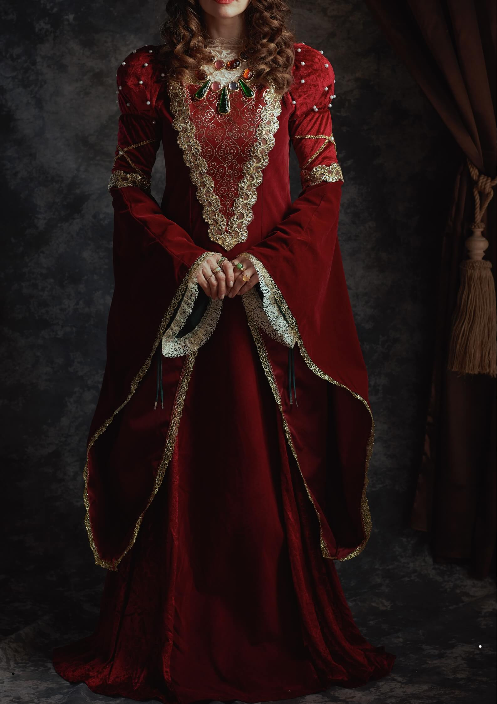

Royal Crimson

Royal Crimson is an elegant and luxurious bridal design created for the modern bride who appreciates timeless beauty and traditional elegance.
Design Inspiration
This design is inspired by royal elegance, traditional bridal fashion, and the beauty of timeless craftsmanship.
The design combines classic elements with modern fashion details to create a graceful and sophisticated bridal look.
Product Details
- Collection: Bridal Collection
- Color: Crimson Red
- Fabric: Silk and Organza
- Style: Traditional with Modern Details
- Occasion: Wedding and Bridal Events
- Design: Embroidered Bridal Wear
Craftsmanship and Details
Royal Crimson features carefully designed embroidery and elegant decorative details. Every element of the outfit is created to enhance the beauty and grace of the overall design.
The combination of luxurious fabric, rich color, and detailed craftsmanship makes this design suitable for a memorable bridal occasion.
Customization Options
The design can be customized according to the client's preferences.
- Color customization
- Fabric selection
- Embroidery customization
- Size and fitting adjustments
- Design modifications
Interested in This Design?
Contact AURELIA to discuss customization options and create your perfect bridal look.
Contact the Designer